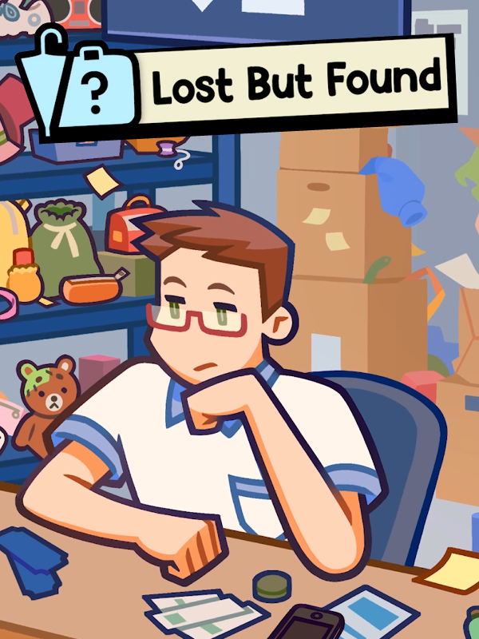

Lost But Found
Lost But Found
Details
|  | |
| Playtime | 44m 0s |
| Last Activity | 2024-12-05 15:33:28 |
| Added | 2024-12-20 22:24:16 |
| Modified | 2024-12-20 22:24:31 |
| Completion Status | Played |
| Library | Steam |
| Source | Steam |
| Platform | PC (Windows) |
| Release Date | 2024-11-25 |
| Community Score | |
| Critic Score | |
| User Score | |
| Genre | Indie Puzzle Simulator Strategy |
| Developer | Rogue Duck Interactive |
| Publisher | Rogue Duck Interactive |
| Feature | Single Player |
| Links | Steam Android |
| Tag | |
Description
Lost But Found is a combination of a job simulator & hidden object-finding game. Your attention to finding the right item passengers need, and managing them in a tidy manner will earn you money!

Gameplay
In a top-down table, you are an officer who collects the lost items in an airport. Organize those items in the table. When people who lost their items request them, see if you have the item, then give it to them.
You are expected to be an honest officer, but there is expensive, tempting items, which you are able to steal and sell in the black market. Lost But Found is filled with little fun mechanics, that will make your role-playing experience fun!

You are expected to make sure every passenger in the airport gets their lost item, when you don't have the item, you have the option to take their contact number, to call them when you find their lost items.
Making money, and buying upgrades to make your job easier in the office is necessary. With the interactive upgrade system, where every item you buy has a function, that will either make your job easier or increase your earnings.

Mechanics
Stacking items on the table to make sure you have enough space.
Notepad to take down people’s numbers
A phone to dial people to take their items.
Ability to decide to keep items for yourself.
Start your day by helping passengers find their lost items
Passengers come to ask for their item
if you have it, give it to them
If you don’t, take their number and send them on their way
If the item comes in another day, call them to come to pick it up and keep it safe for them